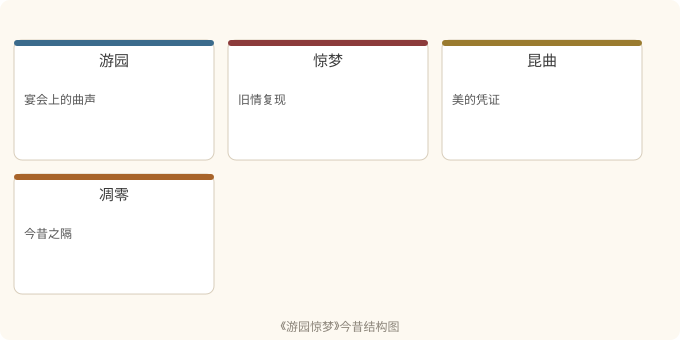

游园惊梦
一、基本信息
| 作者 | 白先勇 |
|---|---|
| 成书/出版 | 1982年出版（Britannica：Yu-yüan ching-meng (1982; Wandering in the Garden, Waking from a Dream)） [来源缺失 B208] |
| 国别/地区 | 中国 |
| 时代 | 现当代 · 台湾现代主义 |
| 体裁 | 短篇小说 |
| 语言 | 汉语（白话·昆曲语境） |

《游园惊梦》今昔结构图（主题·结构图）
二、创作背景
Britannica（B208）：白先勇'author of Yu-yüan ching-meng (1982; Wandering in the Garden, Waking from a Dream), remained influential'——其代表作之一。
与《牡丹亭》互文：昆曲《游园》《惊梦》折子戏即标题（通说）。
三、内容脉络
钱夫人在窦公馆宴会上听《游园惊梦》——旧梦重演、恍惚失神（通说待核）。
今昔对照：从昆曲名伶到落魄夫人（通说待核）。
四、主要人物表
| 人物 | 身份 | 说明 |
|---|---|---|
| 钱夫人（蓝田玉） | 昆曲名伶 | 宴上的惊梦（通说待核） |
| 天那negative？——不：窦夫人 | 主人 | 今之贵妇（通说待核） |
五、主题与艺术特点
- 昆曲意象与叙事意识流（通说）。
- '台北人'主题的单篇浓缩（通说）。
- 情与美的凋零（通说）。
六、影响与评论
- Britannica：白先勇代表作之一（B208）。
[来源缺失 B208] - 改编话剧/电影/电视剧多次（通说待核）。
[来源缺失 B208]
七、阅读建议
难点
- 意识流的心理时序。
- 昆曲唱词互文。
- 《游园惊梦》（收于《台北人》以外的集子/尔雅版，通说待核）。
先《台北人》再本作。
八、待核实
- 钱夫人名（蓝田玉）与情节核对。
- 1982年为结集年份（单篇首发1970年代说）待核。
- 话剧1983年（华文版《游园惊梦》）待核。
本页主要来源
- [来源缺失 B208]
白先勇的其他收录作品：台北人